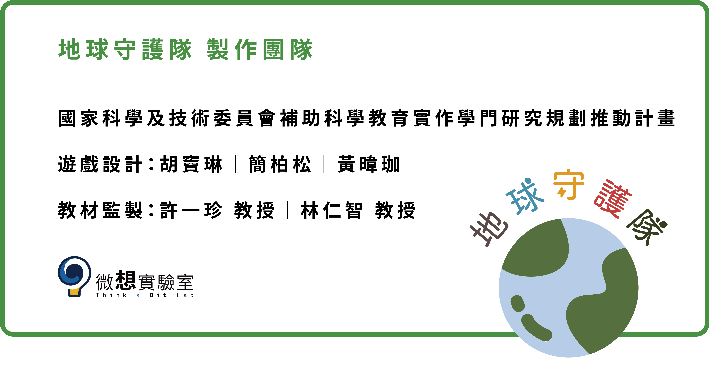

專案宣傳影片
專案簡介
本計畫針對國小中高年級自然科學實驗單元設計一套桌上遊戲教具「地球守護隊」,共有 3個單元「水汙染」、「空氣汙染」、「土壤汙染」，單元間可互相搭配，增加遊戲難度,也有搭配平板電腦可使用擴增實境(Augmented reality, AR) App(Application)的數位桌遊教學方式,可視教學設備與場域的適性使用。
單元內容詳情
有害物質（如化學物、重金屬、病原體或生活廢水）進入水體（河流、湖泊、海洋、地下水等）中，便會導致水質的惡化，因而使其無法安全使用或影響生態系統。
有害氣體、懸浮微粒或生物因子進入大氣，便會影響空氣的品質，因而對人體健康與環境造成負面影響。
有害物質（如重金屬、有機污染物、農藥等）進入土壤，便會破壞土壤品質，因而影響植物生長與食物安全。
專案成果展示


現場施測紀錄


教材與學習資源下載
地球守護隊 製作團隊
